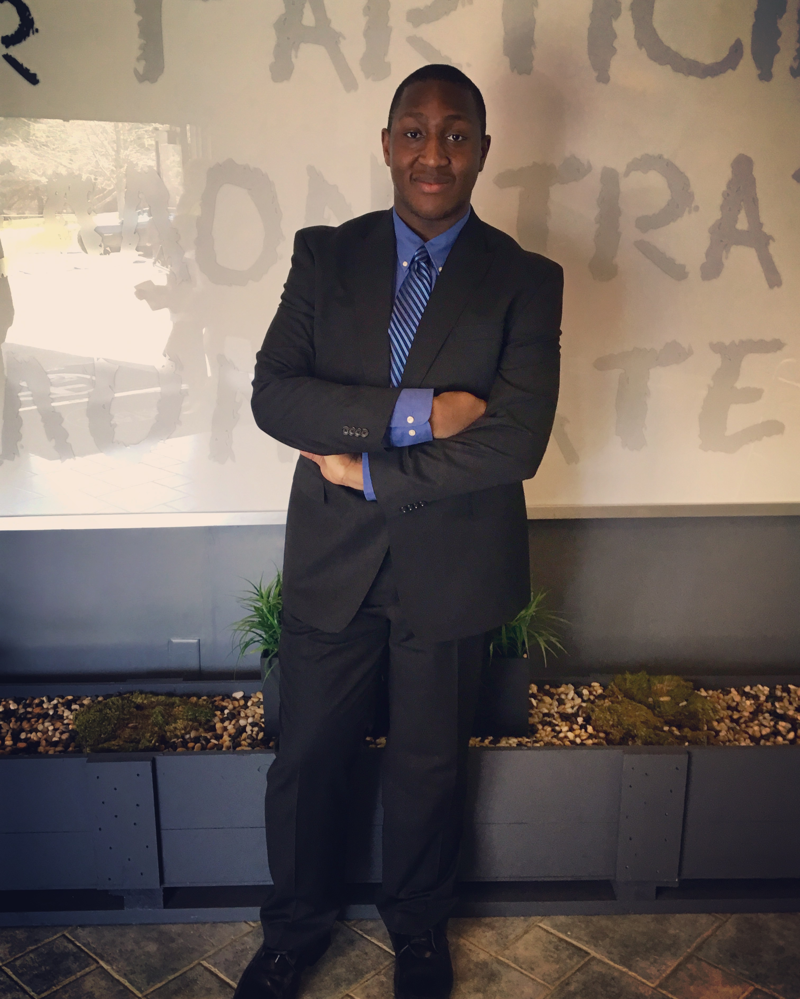

About Me
Ever since I was 5 years old, I always loved computers. From playing with computer games to rushing to the bus to computer camp every summer, I always knew that utilizing technology would be a major part of my life early on. Looking back, almost every non-academic aspect of my life involved working with technology, and I knew that no matter what I ended up doing growing up, I would want to work with any form of technology or software. As I got older and entered college, I slowly realized that my goals regarding computers have evolved. I discovered the interest and lifestyle of being a software developer, and it made me want to learn how to code and create something interesting through software development. I genuinely love helping people, so to use my skills to create something that can help someone else in any form puts a smile on my face every day. Throughout college years and post-grad life, I learned numerous programming languages as well as computer structures and software engineering practices. I've also gotten the chance to develop some amazing projects that I'm proud of. Also, as mentioned above, I've also began to shift towards more of an interest in software development as a career rather than just working IT and troubleshooting computers. When I'm not programming, you can find me working out at the gym, volunteering at the church, or writing poems and stories. If it's a chill night, you may also catch me watching either a sports game or a psychological thriller. Take a moment to check out my portfolio, and feel free to contact me with any questions.